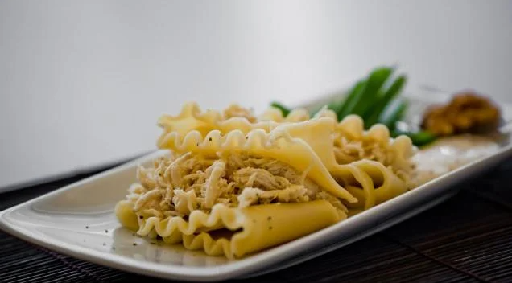

Receita de Lasanha de Frango com Queijo

Descrição
Camadas suculentas de frango desfiado, queijo derretido, presunto e um molho irresistível. Uma combinação
perfeita que vai conquistar seu paladar.
Surpreenda sua família e amigos com essa receita de lasanha de
frango de dar água na boca. Não perca tempo e experimente agora mesmo!
Ingredientes
- 1 Peito de Frango
- Queijo Mussarela
- 500 g de Queijo Muçarela Fatiado
- 400 g de Presunto Fatiado
- 1 Pacote Médio de Massa para Lasanha (direto ao forno, sem cozimento prévio)
- 1 Pote de Requeijão Cremoso
- 2 Caldos de Galinha (ou tempero completo sabor galinha)
- 2 Copos de Leite
- 1 Caixa de Creme de Leite
- 2 Colheres de Farinha
- 3 Colheres de Manteiga
- 1 Cebola Média
Modo de Preparo
Tempo Gasto: 45 minutos
- Em uma panela, faça um creme homogêneo com as 2 colheres de farinha e 2 colheres de manteiga (reserve 1
colher de manteiga).
- Acrescente o leite, 1 caldo de galinha e mexa constantemente.
- Retire do fogo e acrescente o creme de leite, reserve.
- Cozinhe o peito de frango em água (sem óleo), após cozido, desfie-o.
- Pique a cebola em pedaços pequenos, coloque em uma panela e doure com a manteiga.
- Acrescente o frango e o caldo de galinha, mexa sempre até o frango ficar totalmente dourado.
- Em um refratário, coloque 2 conchas de molho.
- Faça a base com massa de lasanha, cubra com 1 camada de presunto, 1 de queijo e 1 de frango (nessa ordem).
- Sobre o frango, coloque 1 camada de requeijão e 2 conchas de molho.
- Cubra o requeijão com 1 camada de presunto, 1 camada de queijo e 1 camada de massa, coloque molho.
- Repita esse processo até faltar cerca de 2,5 cm para chegar na borda do refratário.
- Para finalizar, cubra a lasanha com muito queijo, requeijão e molho.
- Asse por, aproximadamente, 20 minutos em fogo baixo.